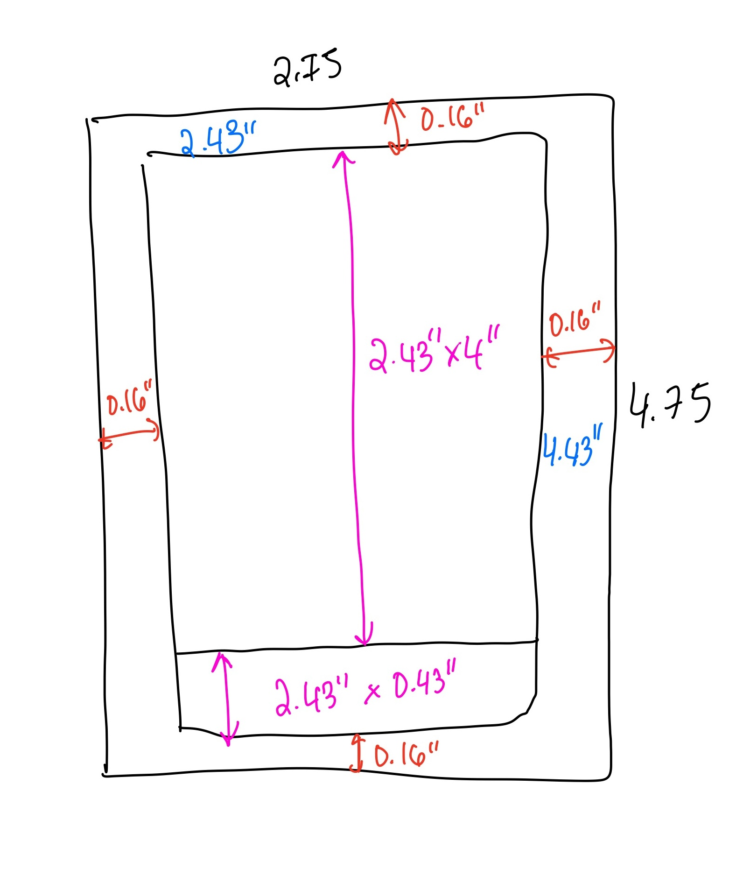

Thesis Weekly Update #6
March 4, 2024: Demo Day
Demo Day Materials
For Demo Day, I printed the Pip cards in the Minor Arcana, as well as a description booklet for those cards. I had to work quickly this week in order to accommodate the print turnaround time at Brooklyn’s Minuteman Press, which is actually really fast. I had a great time working with them and highly recommend their services.
I learned a few things about prepping print files, specifically with border widths to account for card-cutting error. I think it’s really nice to see all the cards laid out together, since one of the things I was most worried about was making sure they looked like they belonged in the same deck. Content-wise for the booklet, I had to trim down a lot of info to make it more digestible and easy to scan, since I primarily want readers to trust their own interpretation of the cards first. While I wasn’t able to present all 78 cards, I think this assortment will give a good idea of the aesthetic I’m going for, as well as the narrative key system I have in place with the seven types of hand gestures.
Feedback from After the Show Activity
The After the Show activity was really helpful for anticipating questions I may get on Demo Day. I think overall, the audience will have a good idea of what my deck aims to accomplish. The three spirits in this activity were able to identify that the cards facilitate a tarot learning experience, particularly for young adults, by using clear imagery and an open-ended narrative system.
The visitors in this activity asked some useful questions that I need to consider for Demo Day. Some of them include:
- Why do tarot decks need updating?
- How does this project expand on existing decks?
- What might an advanced tarot reader like about my deck and learning materials?
- How might a digital or technology component assist tarot readers?
- How will I be leading a tarot reading activity for the final showcase?
- How can I share more info about the tarot production process?